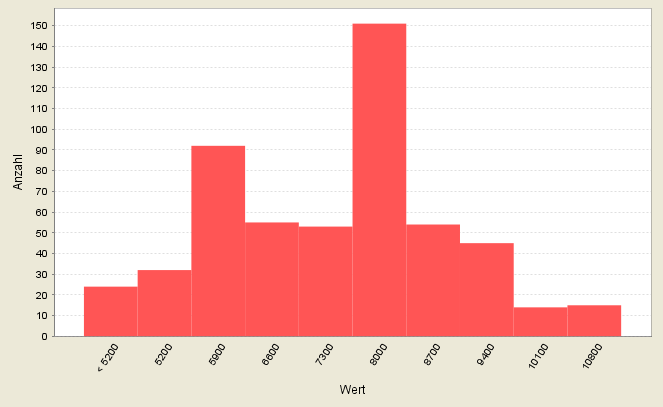

|
Polygone, Linien und Punktobjekte können Klassifiziert werden.
Die Klassifikation dient als Hilfsmittel zur Strukturierung und
Verdichtung von Informationen. Bei der Festlegung der Klassenanzahl, sollte folgende
grobe Richtlinie berücksichtigt werden:
Wird eine Schwarz-Weiß Darstellung gewählt, bzw. eine Helligkeitsabstufung
einer Farbe, können vom menschlichen Auge nur bis zu 7 Klassen auch sicher
unterschieden werden. Bei Farbverläufen mit zwei Farben sind es noch bis zu 14
Klassen. Dies sollte bei einer Klassifikation ebenso beachtet werden, wie die Tatsache,
dass gebildete Gruppen nicht weniger als zwei Elemente enthalten sollten. Eine Klasse
mit nur einem Element widerspricht dem Grundsatz, dass Elemente einer Klasse
untereinander ähnlicher sind als die in unterschiedlichen Klassen. Ausnahmen bilden
Extremwerte oder sachlogische Werte (Indexzahlen, Nullwerte, gesetzlich festgelegte
oder physikalische Grenzwerte), die je nach Kontext hervorgehoben werden sollten.
Das Hauptziel einer Klassifizierung ist die Veranschaulichung von räumlichen
Mustern und Strukturen, nicht die Darstellung von statistischen Einzelwerten an sich.
Ein Grundprinzip der thematischen Kartographie liegt im weniger ist mehr: erst durch die
Reduktion der Detailinformationen von Objekten auf die Ausprägungen weniger
Klassen, werden die wesentlichen Grundzüge räumlicher Muster klar ersichtlich.
Derzeit stehen folgende Klassifikationen zur Verfügung:
| Qualitativ (unique value)
|
Diese Art der Klassifikation wird für qualitative, nominale Attribute
verwendet und erfolgt in der Regel nicht nach absoluten Regeln, sondern
begrifflichen Definitionen oder Ordnungsschemata. Die Klassenzahl wird somit
durch den Grad der Aggregation der Information bestimmt.
|
| gleiche Intervalle (equal interval)
|
Die einfachste Methode der Klassifikation wird für qualitative Daten
verwendet und weist allen Klassen den gleichen Abstand zwischen
Klassenobergrenze und Klassenuntergrenze zu. Diese Klassifikation eignet sich
für gleichmäßig verteilte Datenmengen und für den Vergleich
verschiedener Karten über Zeit und Raum hinweg.
Nachteilig ist, dass sich leere Klassen oft nicht vermeiden lassen, vor allem
bei sehr ungleichmäßiger Datenverteilung.
|
| Quantile (quantil)
|
Ist eine relativ einfache Methode zur Klassifikation qualitativer Daten, bei der
alle Klassen gewöhnlich mit der gleichen Anzahl von Werten besetzt sind.
Diese Klassifikation eignet sich nur für linear verteilte Daten, da
Lücken in der Verteilung der Daten nicht berücksichtigt werden und die
Klassenbreiten stark variieren können.
|
Handelt es sich um einen unbekannten Datensatz, ist es von Vorteil sich vor der
Klassifikation die Verteilung der Daten anzusehen, um die geeignete
Klassifizierungsmethode auswählen zu können. Hierfür steht nach der
Auswahl des entsprechenden Attributes die Option
zur Verfügung.

Jede automatisch erstellte Klassifikation, kann manuell hinsichtlich ihrer
Klassenobergrenze angepasst werden. Nach der Korrektur des Wertes und dem Betätigen
der
[Enter]
Taste, wird die Abfolge der Klassen neu sortiert, die anderen Klassenbreiten werden
dabei nicht verändert. Bereits angewendete Farbschemata oder Muster können
erneut angewendet werden (Rechtsklick auf den entsprechenden Eintrag > aus dem
Kontextmenü die gewünschte Aktion auswählen).
Unabhängig von der Verwendung eines vordefinierten Farbschemas, kann jede Farbe
auch manuell angepasst und/oder mit einem Muster versehen werden (Doppelklick auf die
entsprechende Farbe > aus dem sich öffnenden Dialogfenster die gewünschte
Aktion auswählen). Dasselbe gilt für alle anderen aufgeführten
Darstellungskriterien wie Linienart, Linienfarbe, usw.
|